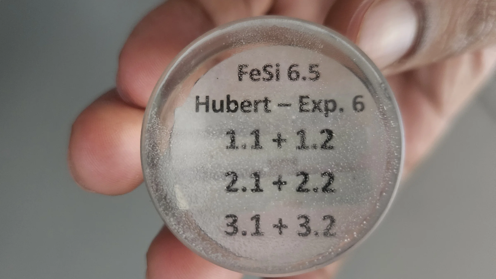
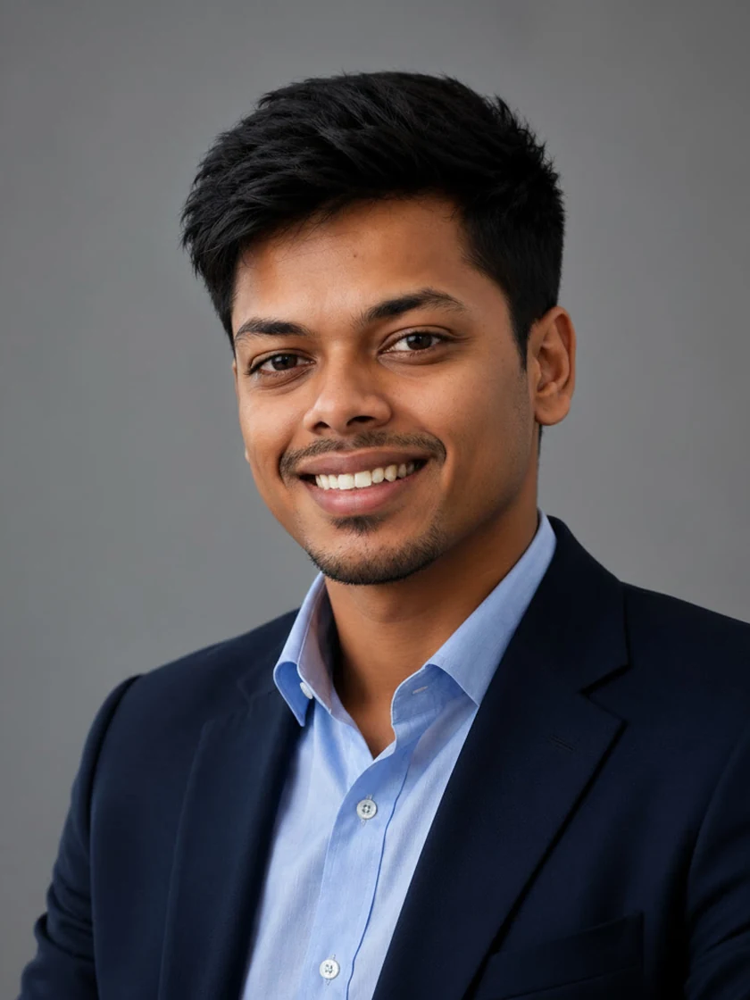
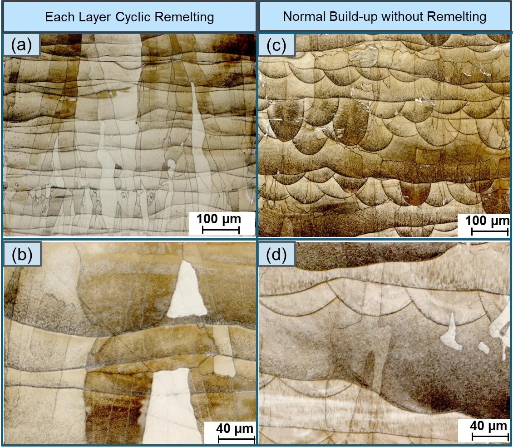
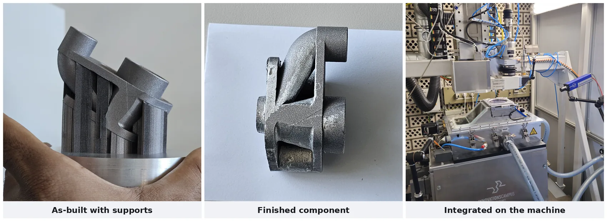
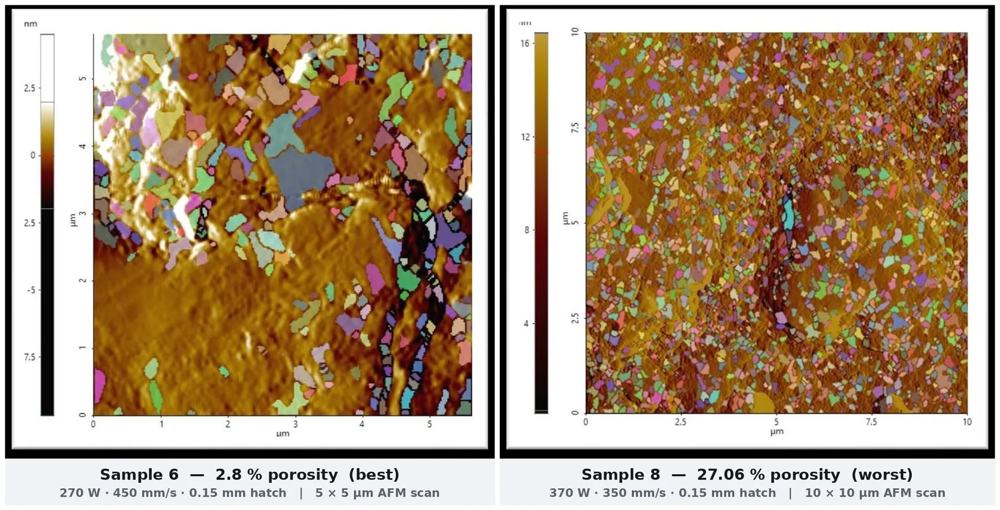

Antony Hubert
M.Sc. Maschinenbauingenieur — Additive Fertigung von Metallen
Laser Powder Bed Fusion (PBF-LB/M) · Verfahrensentwicklung · Werkstoffcharakterisierung
Diese Startseite und der Lebenslauf sind auf Deutsch verfügbar. Die technischen Detailseiten (Projekte, Forschung, Kenntnisse) sind auf Englisch, der Sprache meines Studiums, meiner Masterarbeit und meiner Publikation.
Ein offenes Wort zu meinem Deutsch: derzeit B1, die B2-Prüfung ist für Dezember 2026 angesetzt. Fachliche Gespräche führe ich sicher auf Englisch und arbeite mich im deutschsprachigen Umfeld konsequent weiter ein.
Werdegang
Angefangen habe ich mit Autoskizzen. Ein Bootcamp für Automobildesign, ein preisgekröntes Konzeptfahrzeug, dann ein Maschinenbaustudium und zwei Jahre Industrieerfahrung in Chennai: CAD-Schulungen für über hundert Ingenieure und die Arbeit an CNC-Maschinen. Eine Frage hat mich dabei durchgehend begleitet: Lässt sich das überhaupt fertigen?
Diese Frage hat mich zur additiven Metallfertigung geführt. Für meine Masterarbeit in Deutschland habe ich mich mit FeSi6.5 beschäftigt, einer Legierung, die Elektromotoren messbar effizienter machen würde, sich aber nicht walzen lässt und deshalb kaum eingesetzt wird. Ich habe ein Laserverfahren entwickelt, das gedruckte Bauteile rund 60 Prozent glatter macht und dabei die volle Dichte erhält. Dabei zeigte sich, dass sich über die Wiederholrate des Umschmelzens das Gefüge gezielt einstellen lässt. Die Ergebnisse wurden in Procedia CIRP veröffentlicht. Nebenbei habe ich einen Teil der Anlage selbst neu konstruiert.
Ich suche ein Team, in dem ich genau das weitermachen kann: einen Prozess, den noch niemand beherrscht, reproduzierbar zu machen.

Was ich in ein Ingenieurteam einbringe
| Verfahrensentwicklung | Ich mache aus einem Werkstoff, für den es noch kein Rezept gibt, einen dokumentierten und reproduzierbaren Prozess. |
| Werkstoffcharakterisierung | Die Laborarbeit mache ich selbst: Trennen, Schleifen, Polieren, Mikroskopie, Oberflächenmesstechnik. Kein Warten auf ein externes Labor. |
| Konstruktion & Simulation | CATIA, NX und Creo, validiert in ANSYS. Ich habe Hardware konstruiert, simuliert, gefertigt und in eine laufende Anlage eingebaut. |
| Gestaltung & Kreativität | Ich skizziere Konzepte von Hand, lasse mich von Formen aus der Natur inspirieren und konstruiere entlang der tatsächlichen Nutzung (Zertifikat Angewandte Ergonomie). Handzeichnungen auf Grundniveau; in CAD setze ich einen Entwurf vollständig um. |
| Fertigungsnähe | 4-Achs-CNC und Reverse Engineering. Ich konstruiere Bauteile, die sich auch fertigen lassen. |
| Wissenstransfer | Eine begutachtete Veröffentlichung und über 100 geschulte Ingenieure auf fünf CAD-Plattformen. Ich dokumentiere im Verlauf. |
Ausgewählte Projekte
Die vollständigen Projektbeschreibungen sind auf Englisch.

Masterarbeit · Verfahrensentwicklung
Prozessintegriertes Laser-Umschmelzen für weichmagnetische FeSi6.5-Bauteile
Ein Umschmelzverfahren im Wärmeleitungsregime, das die Schichtoberfläche glättet und säulenförmige Körner in ein gleichachsiges Gefüge überführt, ohne die spröde Legierung weiter zu versprödern.
rund 60 % glatter · veröffentlicht 2024 →

Anlagenentwicklung · CFD
Schutzgas-Zirkulationssystem für eine PBF-LB/M-Forschungsanlage
Konstruiert, simuliert, gefertigt und integriert: aktive Spritzerabfuhr und beheizte Bauplattform für eine thermisch kontrollierte Fertigung.
CAD → CFD → gebaut → validiert →

Bachelorarbeit · Taguchi-Versuchsplanung
Porositätsminimierung in lasergesintertem Cobalt-Chrom für medizinische Implantate
Neun Versuche statt siebenundzwanzig. Eine zehnfache Streuung der Porosität kartiert und den maßgeblichen Parameter identifiziert.
2,8 % gegenüber 27,06 % · Scangeschwindigkeit dominiert →
Zwei weitere auf der Projektseite: eine thermische Charakterisierung von gedrucktem Aluminium für die Luft- und Raumfahrt sowie eine Kamerahalterung, die ich konstruiert und gebaut habe, weil das Labor eine brauchte.